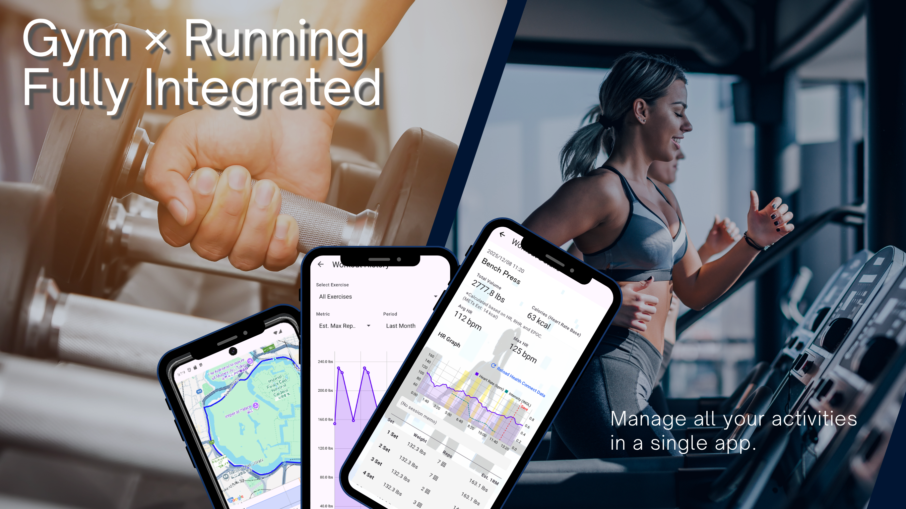
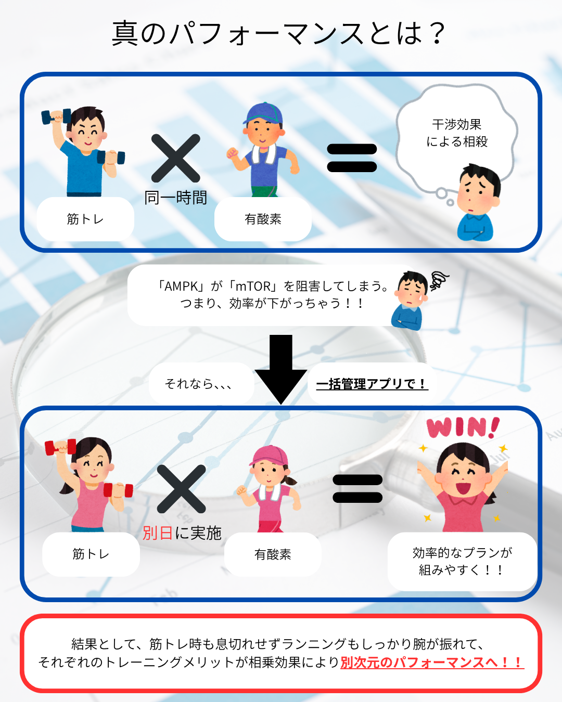
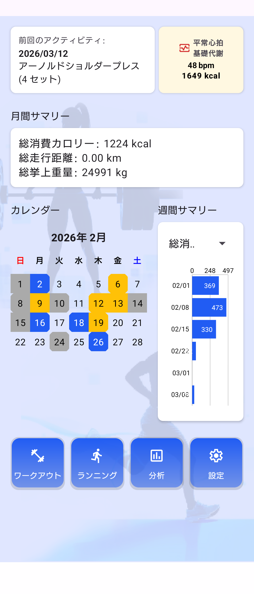
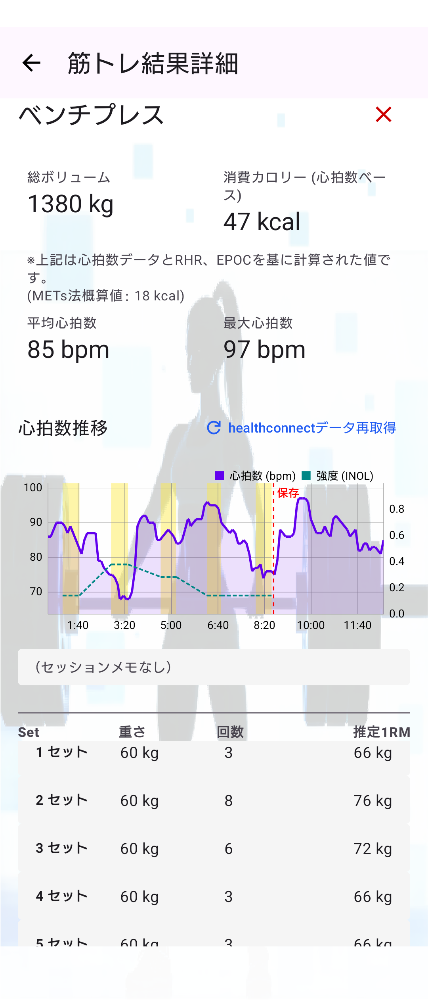
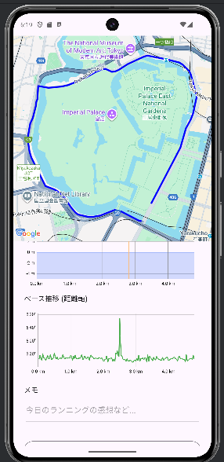

Fitness Manager
究極のシンプル
だけど多機能
圧倒的にシンプルでわずらわしさを排除しつつ、様々な運動に対応する柔軟性を持った、統合フィットネス記録アプリ。

圧倒的にシンプルでわずらわしさを排除しつつ、様々な運動に対応する柔軟性を持った、統合フィットネス記録アプリ。

運動を始めたての頃は、AIが提案するメニューをこなすだけで十分でした。
しかし、知識がつき、自分の身体の反応が分かってきた今、AIの画一的な指示に違和感を覚えていませんか？
「今日は疲労が残ってるからメニューを変えたい」「新しい種目を取り入れたい」。
成長し、感覚が研ぎ澄まされて己の体と対話できるレベルに達したあなたに必要なのは、自分の意志でメニューを組み、
その結果をトレーニングの流れを崩さず容易に記録できる「自由なキャンバス」です。
Fitness Managerは、単一のアプリであなたの身体に起きている変化を包括的に捉えます。
AIに縛られない自由な記録。ベンチプレスの重量から細かな種目まで、自分の意図通りに入力。インターバルタイマーも完備。
GPSを使った屋外でのランニング計測だけでなく、ジムのランニングマシンでの走行記録にも対応。筋トレと有酸素運動をアプリを分けずに統合管理できます。
心拍数やランニングデータなどを普段お使いのデバイスから自動インポート。客観的な指標でリカバリーをサポートします。
真のパフォーマンス向上には、無酸素運動（筋トレ）と有酸素運動（ランニング）の両輪が不可欠だからです。
しかし、現状は「筋トレ用アプリ」と「ランニング用アプリ」が分断されており、互いのデータが結びついていません。ウェイトトレーニングによる疲労が今日のランニングペースにどう影響したか。
その相関関係を可視化し、最適なリカバリーとトレーニング計画を導き出すために、私たちはあえて統合プラットフォームを構築しました。




直感的なUIで、ベンチプレスの重量からランニングの目標距離まで、その日のメニューをスムーズに入力・計測開始。
Health Connectを通じて生体データを自動取得。電波の届かない地下ジムでの記録も、後から安全なクラウド（Firestore）へ自動バックアップ。
自動計算される1RM（最大挙上重量）や、週・月間の統計グラフを確認し、次回のトレーニング強度を客観的に決定する。
AIアプリの決まりきった指示が退屈になり、自分でメニューを組み始めた。しかし、色々な種目や有酸素運動を試すうちに記録アプリが分散。自分が今週どれだけの総合的な負荷を体にかけたのか正確な疲労度が把握できず、成長の停滞や怪我のリスクを感じていた。
「Fitness Manager」一つに集約。AIに決められたメニューではなく、自分で考えたプランを直感的に手動記録。同時にHealth Connect経由で客観的な生体データが蓄積されるため、自分の組んだトレーニング理論が「正解」であると数字で証明できるようになった。
「有酸素」×「筋トレ」が導く、科学的な最適解。
筋力を高めるための負荷と、心肺機能を鍛えるための持続力。
最新の厚生労働省「健康づくりのための身体活動・運動ガイド2023」においても、有酸素運動と筋力トレーニングの組み合わせが強く推奨されています。
数々の研究により、「両方を実践する人」が、どちらか一方のみを行う人よりも総死亡リスクや心血管疾患リスクを最も低く抑えられるという事実が医学的にも証明されています。
私たちは、特定の運動に偏るのではなく、この「科学的に証明されたベストバランス」を誰もが視覚的に管理できるようにすべきだと考えています。
だからこそ、筋力と持久力、異なるアプローチの数値を一つのダッシュボード上で等しく評価できる設計にこだわりました。
数ヶ月後、カレンダーはあなたの努力の色で埋め尽くされます。
蓄積されたデータは、もはや単なる数字の羅列ではありません。
それは、あなたが確実に成長してきたという「揺るぎない証拠」です。
昨日より1kg重く上がった事実、1秒速く走れた事実が可視化されることで、モチベーションは途切れることなく燃え続けます。
データが、あなたをさらなる高みへと駆り立てる原動力となるのです。
「手動入力の自由度」×「自動取得の正確性」の融合。
筋トレ時の細かな重量や回数はユーザーが意図通りに手動入力しつつ、心拍数やGPSルート、消費カロリーといった生体・位置情報はHealth Connectを通じて自動で正確に収集。このアナログとデジタルの最適解を、堅牢なクラウド同期基盤の上で実現している点が最大の強みです。
本アプリには「今日のメニューを自動生成するAI機能」はありません。そのため、何をすればいいか分からない完全な初心者には不親切に感じられるでしょう。自分の頭で考え、自分の意志で身体と向き合いたいと考える方のためのツールです。